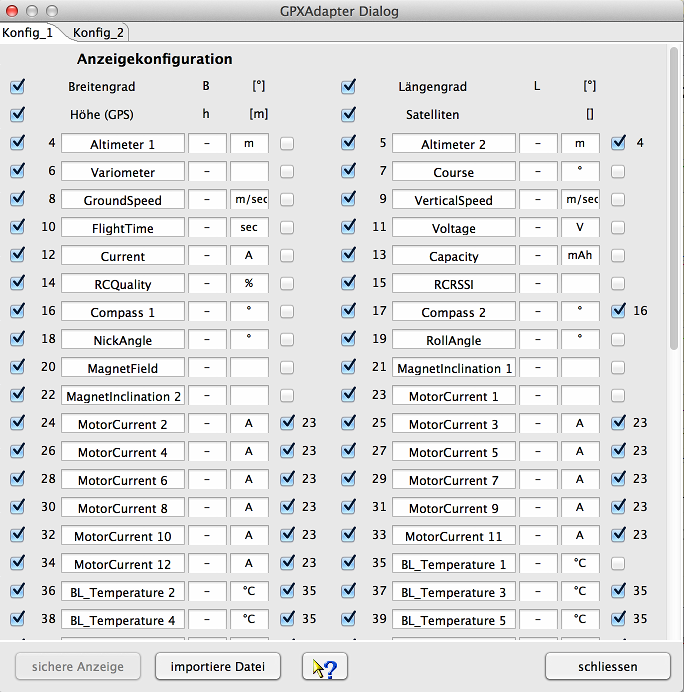

Der gezeigte Gerätedialog dient zur Konfiguration der Anzeige der ausgelesenen Daten. Es können die Messwertnamen, Messwertsymbole und Messwerteinheiten angepasst werden. Einige Messwerte machen in einer Kurvendarstellung weniger Sinn und können abgewählt werden. Nicht selektierte Messgrößen erscheinen nicht in der grafischen Anzeige. Dadurch wird die Übersichtlichkeit stark erhöht. Kurven, wie Längengrad und Breitengrad, die zweidimensional dargestellt wenig Sinn ergeben, können ausgeblendet werden. Über einen Dateiauswahldialog, erreichbar über "importiere Datei", können auch neue Dateien Eingelesen werden. Kurven die keine sinnvollen Daten enthalten werden automatisch ausgeblendet. Die GPS-Daten sind als einzige am Anfang festgelegt, da nur über eine feste Zuordnung festgestellt werden kann, ob GPS Daten anliegen und die dadurch resultierenden Exportmöglichkeiten eingeblendet werden können. So z. B. als Google Earth Dateien (KMZ) exportiert, bzw. direkt angezeigt werden. Nähere Beschreibung dazu siehe Toolbar -> Google Earth.

GPX Dateien enthalten immer GPS Geokoordinaten. Dagegen sind sogenannte "extensions" nur als Messwertname und Werte, zum Teil kommasepariert, vorhanden. Da es zu den Erweiterungen keine verbindliche Beschreibung gibt, müssen Symbole und Einheit selbst ergänzt werden. Es gibt 2 vorbereitete Messwertkonfigurationen, die für 2 verschiedene GPS Dateitypen benutzt werden können. Über den Geräteeigenschafteneditor können auch nachträglich weitere Konfigurationen hinzugefügt werden, sollte das einmal erforderlich sein.
Am rechten Rand der Anzeigenkonfiguration befindet sich ein zusätzlicher Schalter, der eine halbautomatische Synchronisation der Skalen ermöglicht. Wird hier selektiert wird auf Namensgleichheit geprüft, bei entsprechender Übereinstimmung wird in der Gerätekonfigurationsdatei bei den Messwerten die entsprechende Eigenschaft eingesetzt. Funktioniert das nicht automatisch, bleibt immer noch die Möglichkeit das manuell über den Gerätekonfigurationseditor einzustellen. Durch Skalensynchronisation wird die verfügbare Anzeigefläche vergrößert und es können Messwertaufnehmer direkt verglichen werden ohne den Kurvenvergleich zu benutzen.
Über den Geräteeigenschafteneditor kann man bei beliebigen Messkurven eine Skalensynchronisation konfigurieren. Sinn macht das Ganze aber nur, wenn die Wertebereiche zusammenpassen. Stimmen die Messwerte aus den Sensoren mit den Kurvennamen und Einheiten überein kann mit der Checkbox auf der rechten Seite auf Skalensynchronisation geprüft werden. Abschliessend die Konfiguration nochmals sichern. Um die vollen Möglichkeiten des DataExplorers mit den statistischen Auswertungen auszuschöpfen siehe Statistik Anzeige.
Hinweis: Werden Messwertnamen geändert führt das in der Gerätekonfigurationsdatei zu einer Änderung. Ändert sich in einer späteren DataExplorer Version das Gerätekonfigurationsdateischema (DeviceProperties_Vxy.xsd), wird eine Sicherung aller vorhandenen Gerätekonfigurationsdateien angelegt (Devices_Vxy-1) und geht nicht verloren. Die veraltete Gerätekonfigurationsdatei kann dann als Vorlage für die neue verwendet werden.
Tipp: Sind umfangreiche Extradaten (extension) in der GPX Datei vorhanden, wie zum Beispiel beim Mikrokopter, wurde die Möglichkeit geschaffen Messwertnamen zu übersetzen, Einheiten anzugeben, Skalensynchronisation, Messwertfaktoren anzupassen, und so weiter. Bitte in der Textdatei Mappings/GPXAdapter.properties nachsehen und falls nötig Anpassungen vornehmen, bzw. ergänzen. Die Datei befindet sich unter %AppData%/DataExplorer, bzw. Homeverzeichnis/.DataExplorer, bzw. Homeverzeichnis/Library/Application Support/DataExplorer. Der Inhalt sollte soweit selbsterklärend sein. Wird die Datei gelöscht, wird sie bei der nächsten Initialisierung des GPXAdapters wieder hergestellt. Ist die GPXAdapter.properties Datei leer, wird die Konfiguration ausschliesslich über den Gerätedialog vorgenommen. Dabei ist zu bachten, dass die Messwertnamen immer durch die Namen aus der GPX-Datei überschrieben werden, die Symbole, Einheiten und Synchronisationsinformation aber beigehalten werden. Da Extensions in Anzahl und Namen nicht in definierter Reihenfolge vorliegen ist immer der Ansatz über die GPXAdapter.properties Datei vorzuziehen. Die Anzahl und Vorkommen von Messwertnamen in dieser Datei spielt keine Rolle. Hier darf es also Überlappungen mit anderen GPX Dateien geben, wobei die Anzeige immer individuell für den einzelnen Import bleibt.